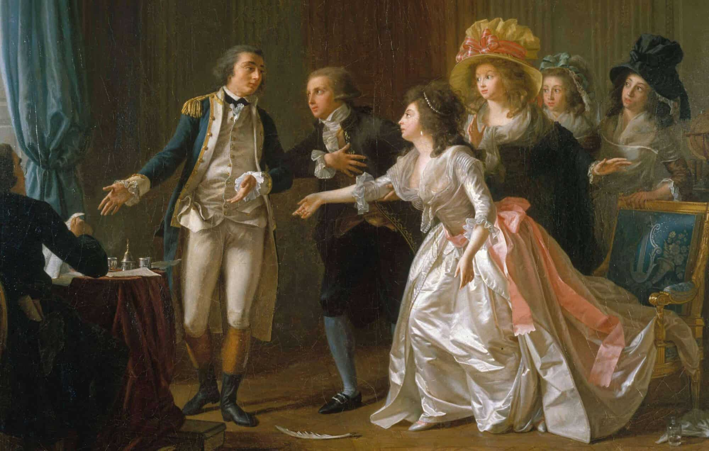
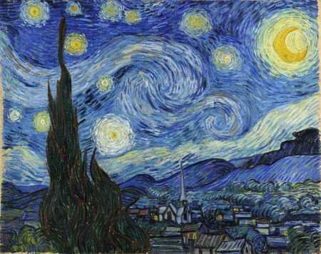
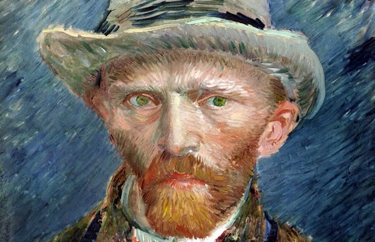
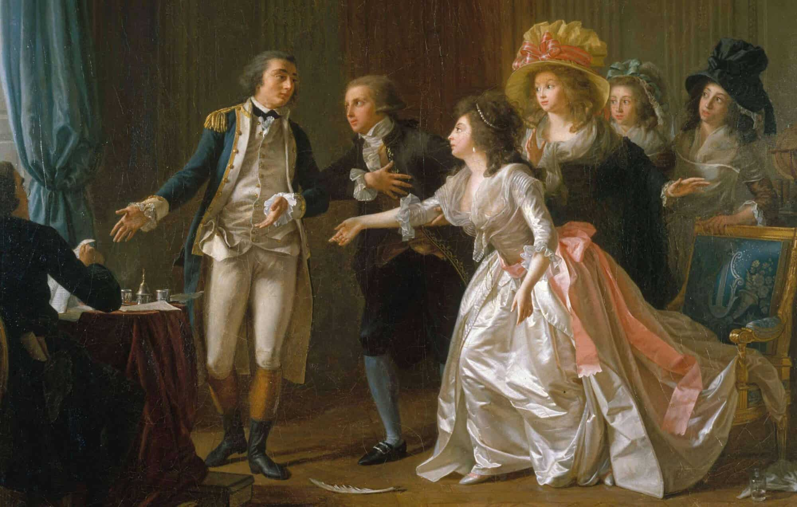
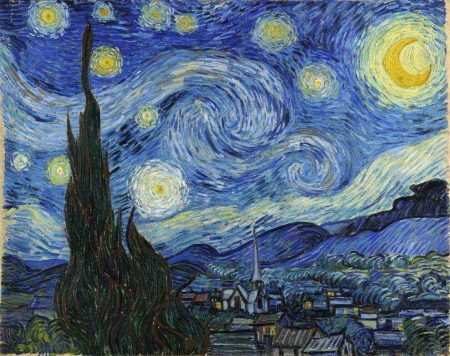
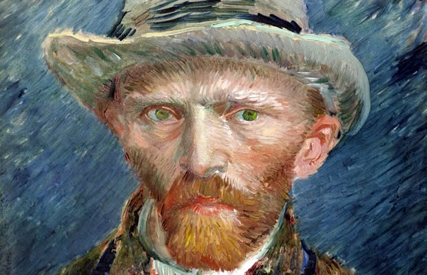
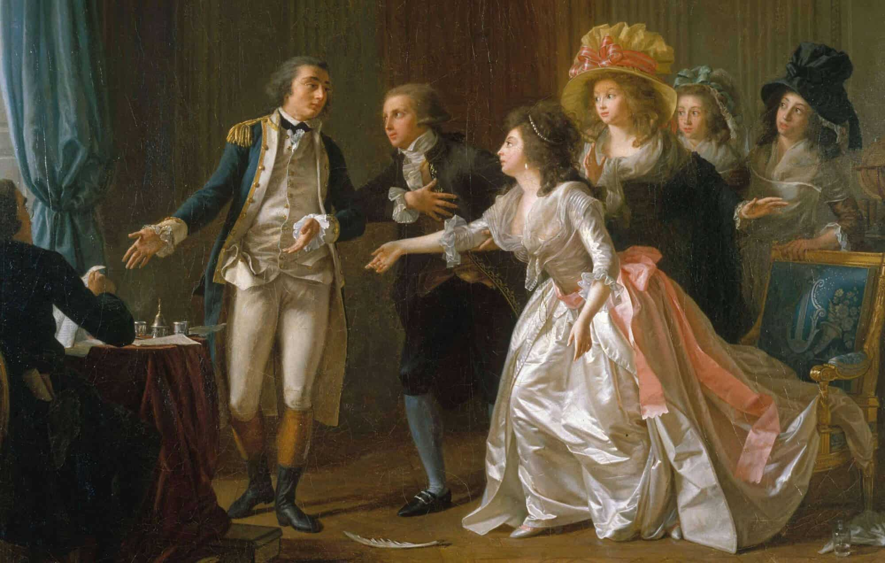
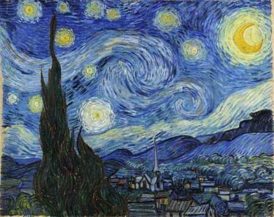
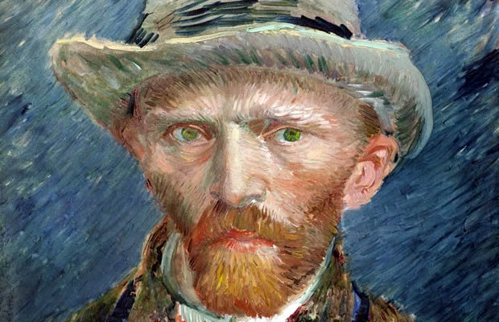

Bem-vindo à nossa coleção de textos
Documento 1
Documento 2
Este projeto é uma exposição digital de obras criadas por artistas independentes, organizada pelos alunos do Instituto Federal de Sergipe, Campus Lagarto, como parte da disciplina de Gerência de Projetos. A iniciativa visa promover a visibilidade desses artistas e proporcionar aos estudantes uma experiência prática de gerenciamento, planejamento e execução de um projeto real. Cada obra apresentada reflete a diversidade artística e a liberdade de expressão, destacando o talento dos artistas e a capacidade dos alunos de gerenciar com eficiência todos os aspectos deste projeto.



Documento 1
Documento 2